In this assignment, we explore non-parametric warps and cross-dissolution as an approach to face morphing. For those unfamiliar with the concept, we define a "face morph" to be a transformation between two faces that transitions seamlessly over some period of time. As an overview, we accomplish such a task by
selecting matching sets of feature points on two input images,
creating a triangulation across the mean of those feature points,
interpolating between the feature points in each image to create our output shape, i.e. some (non-uniformly?) averaged set of points,
computing a local warp (affine transformation) between each triangle in our output shape and the corresponding triangle in each of our input shapes,
bilinearly interpolating over input colors in order to arrive at final values for the pixels in every output triangle,
and finally celebrating with poorly cooked food.
Simple!
Let's walk through the algorithm (and maybe go into a bit more detail), so that you can be even more convinced. Say we have the following two images – one of me and one of my friend Tony. In the interest of higher quality results, I've standardized the image size at a not-at-all arbitrary 476 x 543px and "polygonal lasso tool"ed away most of the background. The edges of the remaining content have been blurred so as to smooth out the difference a bit:
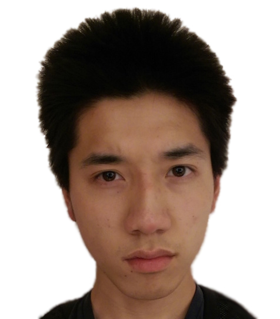
Me (photo credits: me)
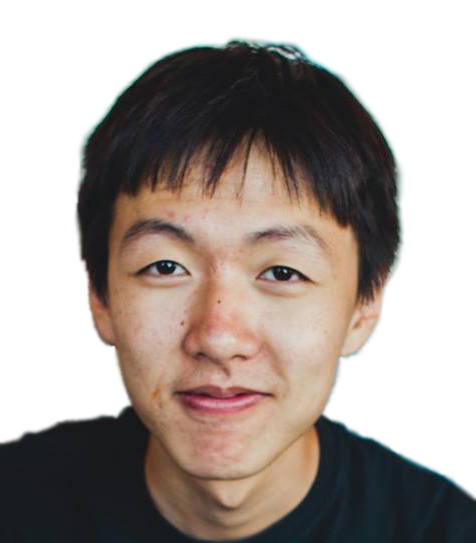
Tony
To start, we select a number of corresponding points in each image (the same number, in the same order, such that a point in one image corresponds to the same "feature" in the other image), and define a triangular mesh over those points. We want this triangulation to be identical across both images – so in order to avoid bias toward either of the sets of feature points, we compute an averaged set of points and generate a Delaunay triangulation over the midway correspondences.
In this case, the points and mesh might end up looking like this (note that the triangulation was computed over the averaged points, although it is shown below as being applied to each image's individual set of points):
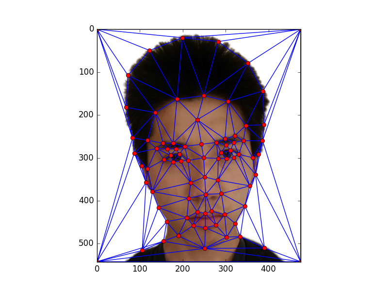
Triangulation over feature points
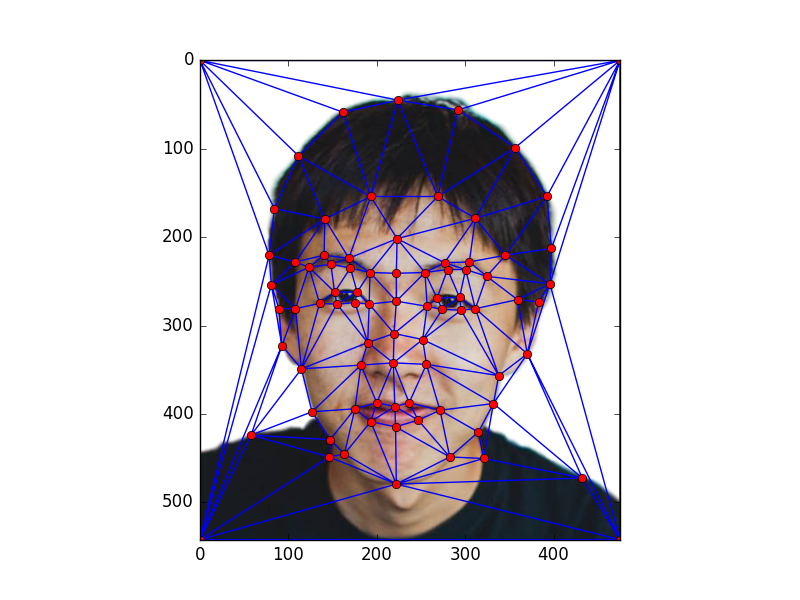
Corresponding triangulation for Tony's photograph
As it stands, we have a triangulation that can be applied to the first image's points, the second image's points, and even a set of points averaged over that of both images. Importantly, a triangle in one set of points has a corresponding triangle in every one of the other sets of points. What this means is that we can now warp the image on a triangle-by-triangle basis!
But how do we do that? Well, we're going to need a bit of math. It turns out that by the same principle as barycentric interpolation, we can define an affine transformation on the vertices of a triangle and it will correctly apply to all of the coordinates within the triangle. In other words, the transformation that turns one triangle's vertices into another triangle's vertices will also map each of the points within the first triangle into the associated point within the second triangle. So when we've defined this warp, we can bring a triangle from one image to the location of the corresponding triangle in another image. (By "corresponding triangle", we refer to the identical triangle in the Delaunay collection, just set up across a different set of points.)
We define \(X\) to be the \(3\) x \(3\) matrix whose columns are the source triangle's vertices (in homogeneous coordinates!) and \(Y\) to be the same matrix for the destination triangle. We'll refer to the transformation we're looking for as \(A\), which will also be a \(3\) x \(3\) matrix such that
$$AX = Y$$
...which, when expanded, might be shown as
$$
A
\begin{bmatrix}
(x_1)_{x} & (x_2)_{x} & (x_3)_{x} \\
(x_1)_{y} & (x_2)_{y} & (x_3)_{y} \\
1 & 1 & 1
\end{bmatrix}
=
\begin{bmatrix}
(y_1)_{x} & (y_2)_{x} & (y_3)_{x} \\
(y_1)_{y} & (y_2)_{y} & (y_3)_{y} \\
1 & 1 & 1
\end{bmatrix}
$$
(where \(x_i\) is the \(i^{th}\) vertex of the source triangle and \((x_i)_{x}\) would be its \(x\)-coordinate. \(y_i\) and its coordinates would be defined similarly, of course, except that it would be part of the destination triangle instead).
Representations aside, we can solve for our affine transformation (/warp) very easily:
$$
AX = Y \\
AXX^{-1} = YX^{-1} \\
A = YX^{-1}
$$
Then we can vectorize our operations by warping every triangle point at once, which is nice:
$$
A
\begin{bmatrix}
(x_1)_{x} & (x_2)_{x} & \dots & (x_n)_{x} \\
(x_1)_{y} & (x_2)_{y} & \dots & (x_n)_{y} \\
1 & 1 & \dots & 1
\end{bmatrix}
=
\begin{bmatrix}
(y_1)_{x} & (y_2)_{x} & \dots & (y_n)_{x} \\
(y_1)_{y} & (y_2)_{y} & \dots & (y_n)_{y} \\
1 & 1 & \dots & 1
\end{bmatrix}
$$
(Programmatically speaking, we obtain all of the triangle points through the use of scikit-image's polygon function.)
Anyway, we now have a means for computing affine transformations between arbitrary triangles... but which triangles are we warping to? Or perhaps from? Since we have two images we want to morph between, we'll need to figure out exactly how much between the images we want to warp. We parameterize this interpolation with \(t\), where \(t \in [0, 1]\); if \(t\) is \(0.4\) it means we want our resulting image to be composed of \(40\%\) the first image and \(60\%\) the second image. We can use \(t\) to create the destination set of feature points, which will be a weighted average of the feature points in the two input images. Specifically, every destination point should be \(t\) times a point from the first image and \((1 - t)\) times the associated point from the second image. By following this process for every pair of feature points in the input images, we obtain our destination image's feature points and, by extension, the destination triangles we'll want to warp from.
You may be wondering: why "from?" Answer: we want to carry out an inverse warp in order to avoid having holes in our morphed image – if we do it this way, and compute the warp from every pixel in the final image, then we know that every pixel will end up with some color value. There's no such guarantee with a forward warp.
So to answer our earlier question, we're warping from the triangles in our destination image (which hasn't been colored yet and exists only as a set of feature points on a set canvas size) to the triangles in each of our input images. Thus, for each coordinate in the destination image we end up with two corresponding coordinates in the two input images – and to arrive at a pixel value for the destination image we simply evaluate a \(t\)-weighted average of the source pixel values for each of those coordinates. One probable issue is that the warped coordinates might not be integers. To get around this, we'll just always (bi)linearly interpolate between the pixel values at the warped coordinates' 4-neighbors – which looks like this:
$$
\text{hdiff} := x - \lfloor x \rfloor \\
\text{vdiff} := y - \lfloor y \rfloor \\
\text{top} := \text{hdiff} \cdot f(x_1, y_1) + (1 - \text{hdiff}) \cdot f(x_2, y_1) \\
\text{bottom} := \text{hdiff} \cdot f(x_1, y_2) + (1 - \text{hdiff}) \cdot f(x_2, y_2) \\
\text{source color} = \text{vdiff} \cdot \text{top} + (1 - \text{vdiff}) \cdot \text{bottom}
$$
if our warped point in the source image is \((x, y)\) and the pixel values of its 4-neighbors are \(f(x_1, y_1)\), \(f(x_2, y_1)\), \(f(x_2, y_2)\), \(f(x_1, y_2)\) starting from the top left and reading clockwise.
Finally, to obtain the overall color for each pixel in the destination image, we would cross-dissolve (i.e. linearly interpolate) between the colors from the two source images.
$$
\text{final color} := t \cdot \text{color1} + (1 - t) \cdot \text{color2}
$$
Aaand after doing this for every point in the destination image, we'd end up with our morphed image (again, parameterized by \(t\)). For instance, the below image has \(t = 0.5\) and is therefore exactly in the middle:
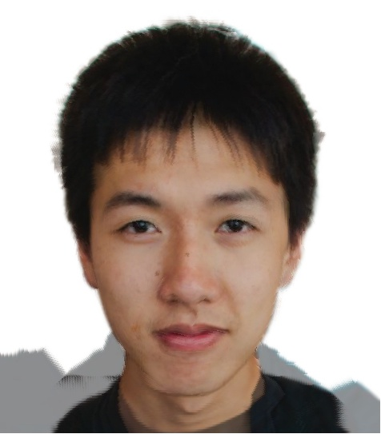
50% Tony, 50% Owen
In order to construct a nice morphing animation, we run the entire process for \(t = 0, t = 0.022, t = 0.044, \dots, t = 0.978, t = 1\) (where \(t = 0\) would be entirely the first image, and \(t = 1\) would be entirely the second image) and string the morphed results into a GIF.
They say the whole is greater than the sum of its parts
Fantastic. As another example, I ran this process on myself and my brother:
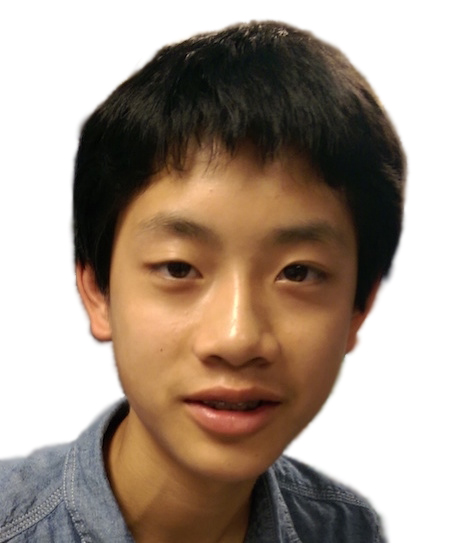
William
Combined GIF
"Mean Face" of a Population
The IMM Face Database is a freely available dataset of annotated Danish faces. (By "annotated", I mean that the feature points have already been selected.) The dataset contains the various poses and expressions of forty people (of which 33 are men; we choose to focus only on the men since there are a lot more of them). Each person has been photographed in six different settings, for example "front-facing neutral expression", "left-facing neutral expression", "front-facing smile"... you get the idea. During this part of the assignment, we compute the average of the 33 male faces for a single image type at a time.
This means averaging over the feature points for each face in order to discover the average face shape, and then morphing each of the faces into this average shape. These gentlemen have been morphed into the average face shape of a smiling male Dane:
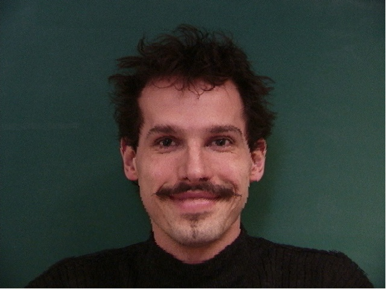
Guy #10
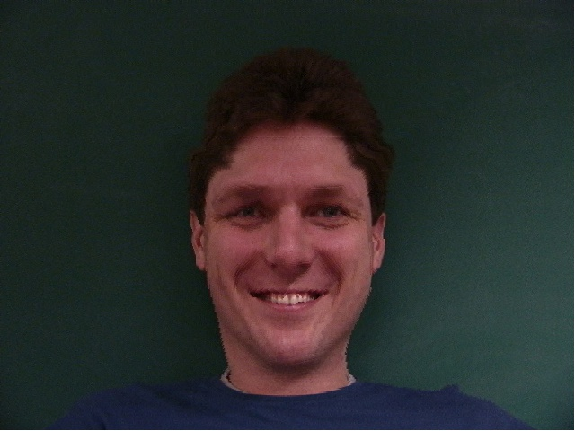
Guy #20
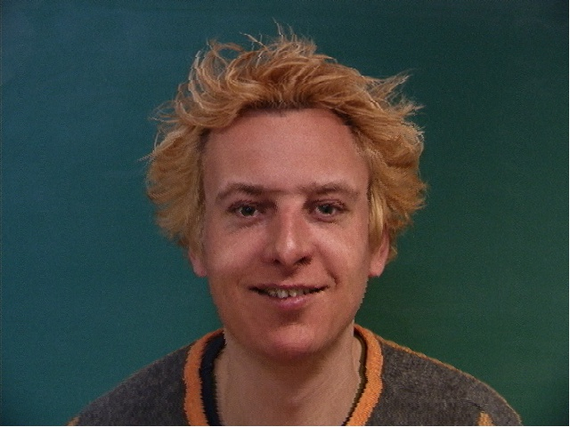
Guy #40
For reference, here are the originals.
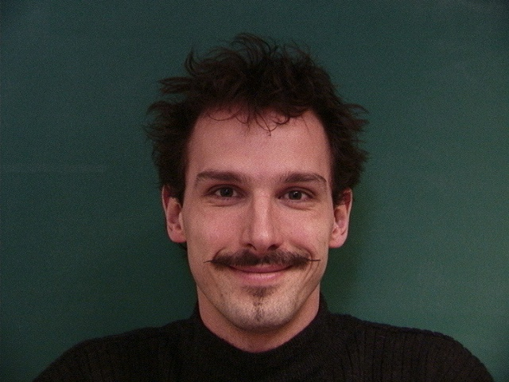
Original #10
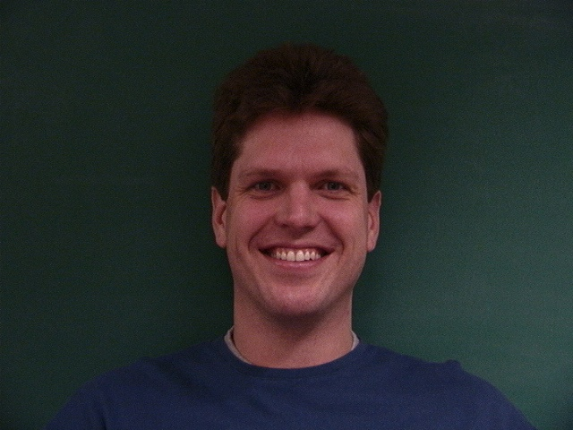
Original #20
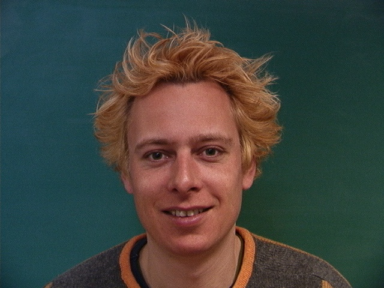
Original #40
From all of our warped faces, we compute the average by summing out and dividing by 33.
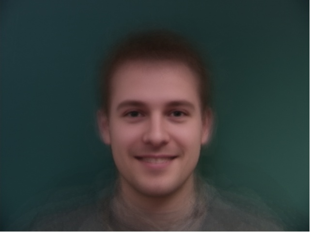
Just your average smiling Danish male
Below are the same results except for front- and left-facing neutral expressions.
▲ Front-facing / ▼ Left-facing
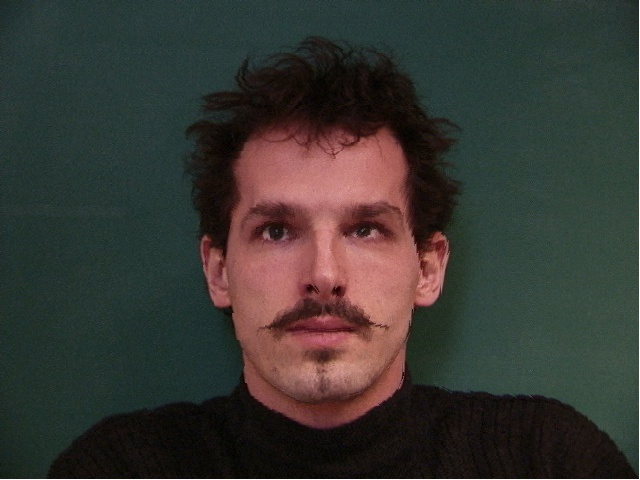
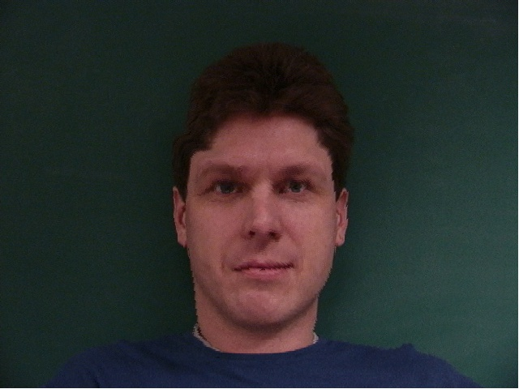
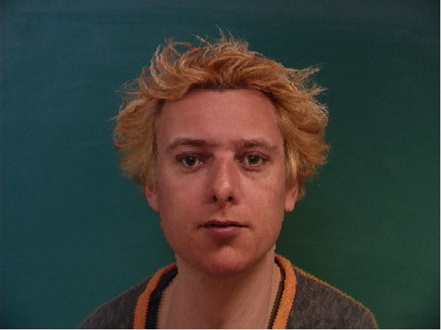
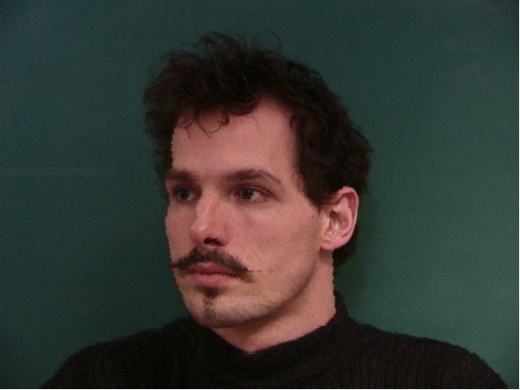
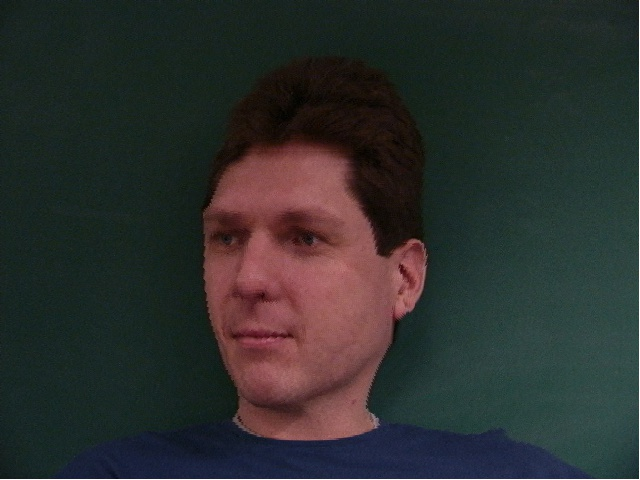
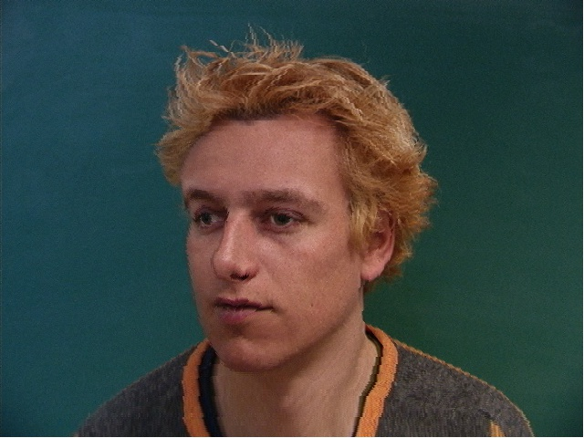
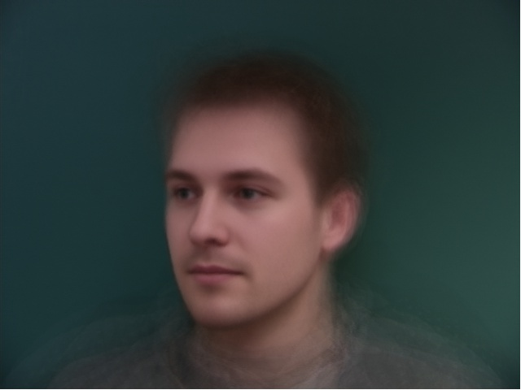
We can also warp a non-Danish face into the average geometry of the Danish face, and warp the average Danish face into the geometry of a non-Danish face. Both of these results were computed using image type 1 in the IMM dataset (front-facing neutral):
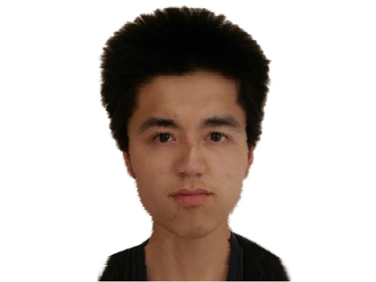
This cracked me up
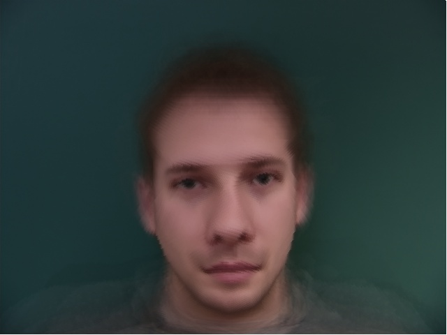
My tilted Danish face
Caricatures
How else can we mess with people's faces? Well, we could create a caricature (def. "comically or grotesquely exaggerated representation") by extrapolating from the population mean of the previous section. In other words, we can calculate the difference of our image shape from the mean shape and scale it before adding it back to our original mean shape. This allows us to take a parametrically defined step in the direction of that difference (which is to say we can take as large of a step as we want), creating with luck a nicely exaggerated image. Mathematically:
$$\text{caricature shape} = \text{mean shape} + \alpha (\text{image shape} - \text{mean shape})$$
Note that for this to be a true extrapolation, \(\alpha\) should be \(< 0\) or \(> 1\).
Then we can warp an arbitrary face to the caricature shape as normal, and produce images like this (which was created using the front-facing neutral mean and an \(\alpha\) of 2)
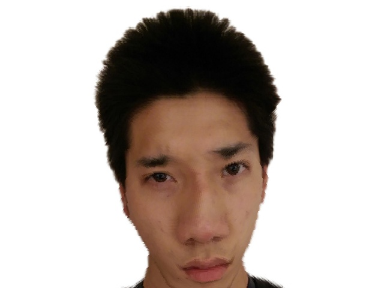
Nice
...or these, "caricaturized" using the front-facing smile and the lit front-facing neutral as bases:
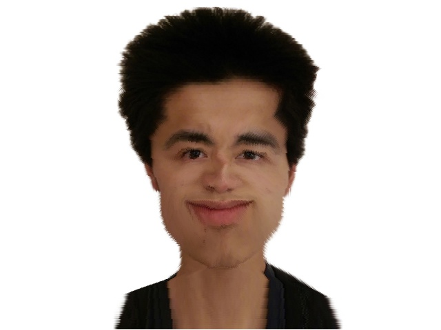
Image type 2, \(\alpha = -0.5\)
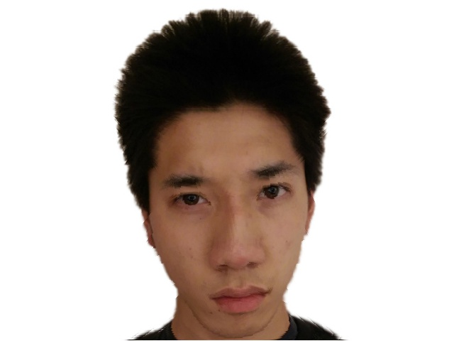
Image type 5, \(\alpha = 1.5\)
Ethnicity Alteration (Japanese Oliver)
Let's take my white roommate, Oliver, and make him a little less white by morphing his face with that of the average Japanese actor. Original images and their correspondence point triangulations are as follows; for reference, I obtained the Japanese average from this website.
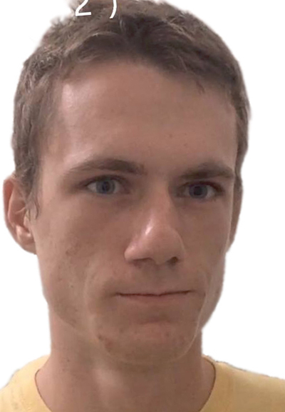
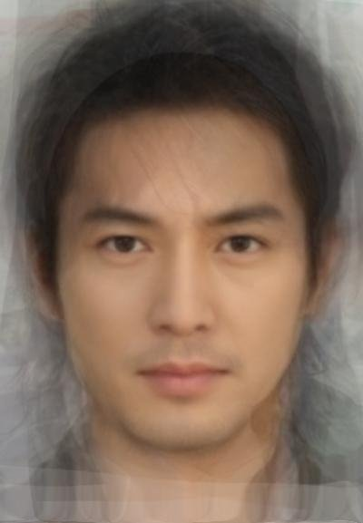
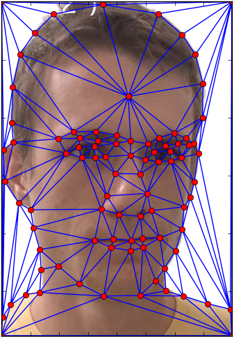
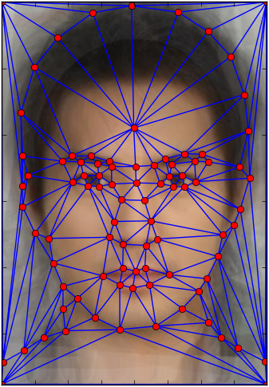
We try three types of morphs: shape and appearance, shape only, and appearance only. Below are some examples:
Midpoint image
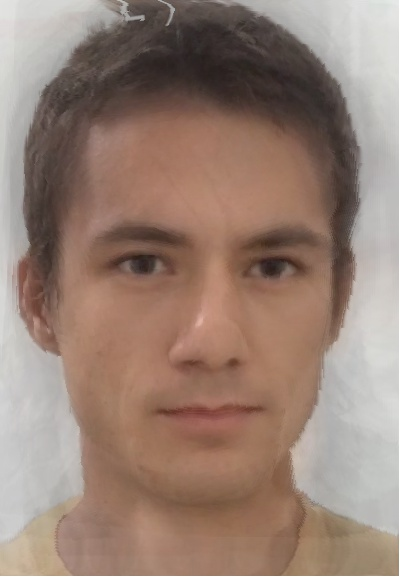
t = 21
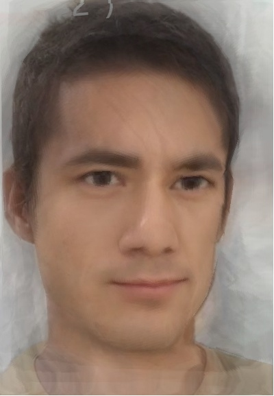
warp_frac = 1.0, t = 30
A more convincing result than I expected, to be honest! Meanwhile, here are the GIFs for each type of morph:
Shape only
Appearance only
Both
dOwen / dt
Finally, I made a morphing video in order to highlight temporal variations in my facial attributes. The video has been composed of ten photographs across chronologically increasing points in time.
Original photographs (subject age ranging from about 0 y/o to 19 y/o):
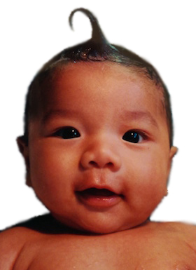
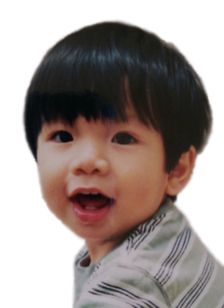
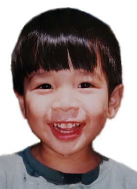
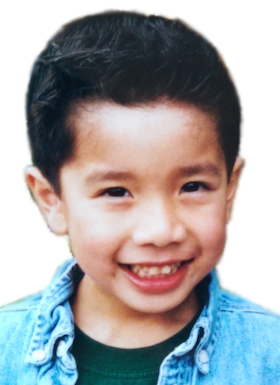
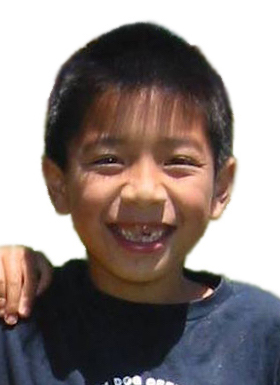
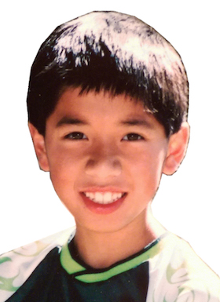
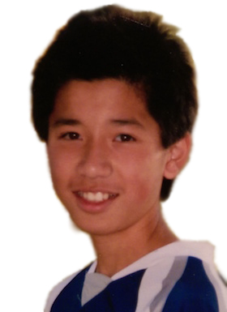
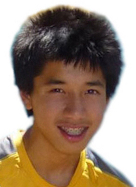
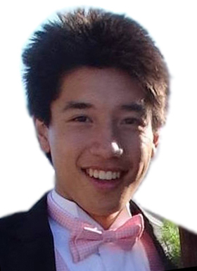
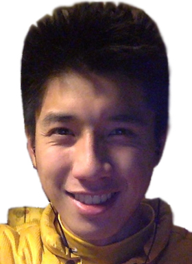
So to conclude this writeup, we have the morphing video constructed from those photos:
Ideally the images would be more evenly spaced, but I was hard-pressed to find pictures of myself from the middle of my childhood. As a result, I ended up with a denser sampling of photographs from my most early and most recent years. (I suppose it could be worse.)